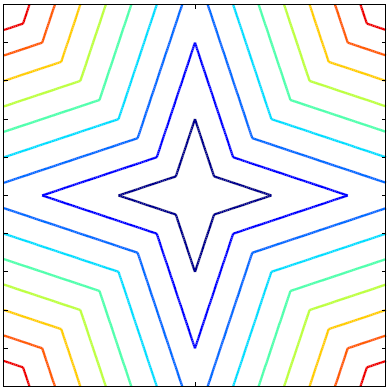
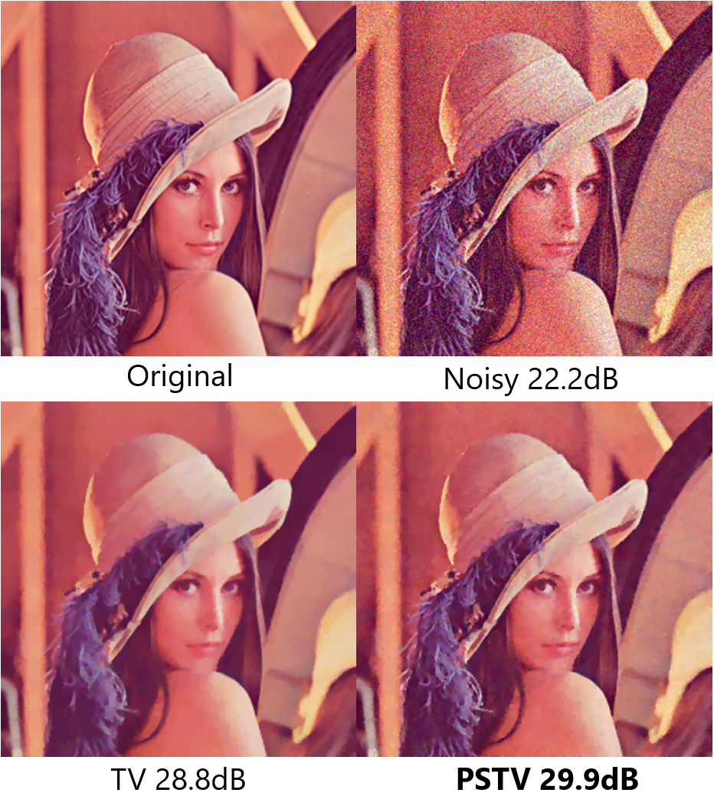
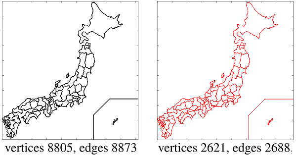
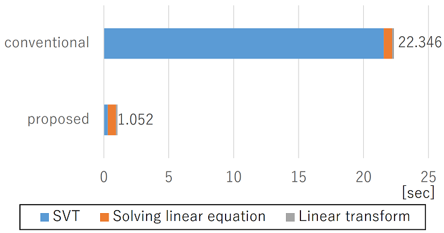
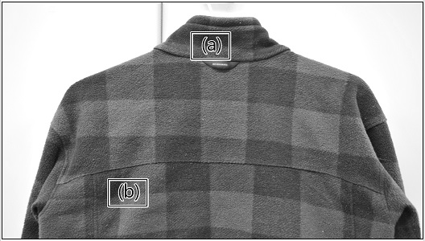
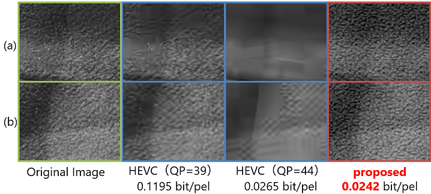

Takayuki Sasaki was born in Osaka, Japan in 1987. He received the B.E. and M.E. degree in System Science in 2011 and 2013 from Osaka University, respectively.
Since joining NTT Corporation in 2013, he has been engaged in research on mathematical optimization and its application to video coding. He is currently a Researcher at NTT Computer and Data Science Laboratories and a doctoral student at Tokyo Institute of Technology. His research interests are in image processing, signal processing and mathematical optimization.
He is a member of IEEE and IEICE.
Graph signal processing, which deals with sequences of numerical values defined on a graph network, provides an approach for mathematically handling complex relationships between numerical values that cannot be handled by conventional classical signal processing.
The graph Fourier transform is a particularly powerful tool, not only for frequency analysis of graph signals, but also for achieving various types of graph signal processing, such as noise reduction and spectral clustering. However, to perform fast operations (Fast Fourier Transform; FFT) such as classical signal processing, it is necessary to impose constraints on the structure of the graph.
We are greatly interested in the Cartesian product structure of graphs, where the graph Fourier transform can be computed very fast. For a graph \(\mathcal {G}=\mathcal {G}_1 \square \mathcal {G}_2 \square \cdots \square \mathcal {G}_D\) consisting of the Cartesian product of multiple factor graphs, the Laplacian matrix \(\mathbf {L}\) is represented by the Kronecker sum of the Laplacian matrix of the factor graphs \(\mathbf {L}_i\). \[ \mathbf {L} = \mathbf {L}_1 \oplus \mathbf {L}_2 \oplus \cdots \oplus \mathbf {L}_D \] From this, the eigenvalue decomposition \(\mathbf {L} = \mathbf {U} \boldsymbol {\Lambda } \mathbf {U}^* \) of the Laplacian matrix \(\mathbf {L}\) is obtained by \[ \boldsymbol {\Lambda } = \boldsymbol {\Lambda }_1 \oplus \boldsymbol {\Lambda }_2 \oplus \cdots \oplus \boldsymbol {\Lambda }_D \] \[ \mathbf {U} = \mathbf {U}_1 \otimes \mathbf {U}_2 \otimes \cdots \otimes \mathbf {U}_D. \] Because the graph Fourier transform is a linear transform using the matrix \(\mathbf {U}^*\), a fast graph Fourier transform can be constructed by compositing \(\mathbf {U}_i\) multiplication as needed for the graph signal.
In order to model the potential sparsity/low rankness of data and physical phenomena, many researchers have used the L1-norm/nuclear norm. However, I believe that these norms are not sufficiently expressive to formulate a wide variety of a prior information about the object of analysis.
Therefore, I use a new regularization function for sparsity, the pointed star quasi-norm, and a non-convex low-rank regularization function, the weighted nuclear norm, to formulate the sparsity/low-rankness of signals more flexibly. I will also investigate fast methods for computing proximal mapping, which are the key to solving optimization problems using these regularization functions.
For example, the regularization problem with the Pointed Star Total Variation (PSTV), which is an extension of the Total Variation (TV) by the pointed star quasi-norm, can be expressed by the following formula, \[ \min _{\mathbf {x}\in \mathbb {R}^N} \dfrac {1}{2} \| \mathbf {y} - \mathbf {Ax} \|_2^2 + \Omega _{\mathbf {w}}( \mathbf {Dx} ) \] where \(\Omega _{\mathbf {w}}( \mathbf {x} )\) is pointed star quasi-norm, which is the inner product of the weight vector \(\mathbf {w}\) and the vector \( | \mathbf {x} |_{\downarrow }\) with the absolute values of each element in descending order. \[ \Omega _{\mathbf {w}}( \mathbf {x} ) = \langle \mathbf {w}, | \mathbf {x} |_{\downarrow } \rangle \] The pointed star quasi-norm is an extension of the L1 and L0 norms, and has the property of solving optimization problems faster than L0 norm constrained problems while having stronger regularization performance than the L1 norm.
By using the PSTV as an image regularization function, various image processing tasks such as denoising and super-resolution can be solved.

contour of pointed star quasi-norm

Boundary information, contour information, 3D models, etc. can be defined as a graph where many vertices are connected by edges. The greater the number of vertices and edges in a graph, the more detailed the object can be represented, while redundant information not used for representation or data processing should be reduced.
We propose a method of graph simplification based on nuclear norm
regularization to reduce the number of vertices and edges while preserving as
much important information as possible. We also propose a fast computation
method for singular value thresholding, which has been a bottleneck in the
computation time of this process.


Conventional video coding techniques have been developed and standardized with the goal of faithfully reproducing the waveform. This has been very successful and has become an essential technology for today’s television broadcasting and video streaming.
We believe that the next step of video coding is to transmit/control
SHITSUKAN, which includes the sense of materiality of the subject and
the sense of atmosphere of the place. In order to transmit and control
SHITSUKAN, we propose a SHITSUKAN video coding scheme based on
signal decomposition, and aim to contribute to the next generation video
coding.


With "Signal Processing" at the core of my expertise, I specialize in the following technical areas;
T. Sasaki, B. Yukihiro, R. Tanida, M. Kitahara, Y. Hiwasaki, and H. Kimata, “Fast-parallel singular value thresholding for low-rank analysis with small column-matrices,” IEEE Transactions on Signal Processing, (inpress).
佐々木崇元, 谷田隆一, 清水淳, “Texture 合成符号化における非合成領域決定法の検討,” 電子情報通信学会論文誌 D, vol. 99, no. 9, pp. 865–867, 2016, [link].
T. Sasaki, R. Tanida, M. Kitahara, and H. Kimata, “Fast-parallel singular value thresholding for many small matrices based on geometric feature of singular values,” in 2021 Asia-Pacific Signal and Information Processing Association Annual Summit and Conference (APSIPA ASC), [link], 2021, pp. 1–8.
T. Sasaki, M. Nakashizuka, and Y. Iiguni, “Audio signal recovery from random sampling with sparsity prior on frequency spectrum,” in International Technical Conference on Circuits/Systems, Computer and Communications (ITC-CSCC), 2011, pp. 447–450.
佐々木崇元, 坂東幸浩, 北原正樹, “高速グラフフーリエ変換に基づくグラフ信号雑音除去の高速化と画像応用に関する一検討,” in 電子情報通信学会技術研究報告, vol. 122, 電子情報通信学会, 2023, pp. 11–16.
佐々木崇元, 坂東幸浩, 北原正樹, “加重核型ノルム正則化に基づくグラフ単純化,” in 第21回 情報科学技術フォーラム (FIT), 第3分冊, 2022, pp. 101–108.
佐々木崇元, 坂東幸浩, 北原正樹, “高速グラフフーリエ変換に基づくグラフ信号雑音除去の高速化,” in 第37回 信号処理シンポジウム講演論文集, 電子情報通信学会信号処理研究専門委員会, 2022, pp. 432–437.
佐々木崇元, 坂東幸浩, 北原正樹, “尖星全変動正則化に基づくグラデーションとエッジ同時制御可能なエッジ保存平滑化,” in 第36回 信号処理シンポジウム講演論文集, 電子情報通信学会信号処理研究専門委員会, 2021, pp. 181–186.
佐々木崇元, 谷田隆一, 木全英明, “高速逆数平方根によるFast Multiple特異値閾値処理の高速化,” in 電子情報通信学会技術研究報告, [link], vol. 120, 電子情報通信学会, 2021, pp. 230–234.
佐々木崇元, 北原正樹, 清水淳, “低ランク最適化のための高速特異値閾値処理の数理,” in 第16回 情報科学技術フォーラム (FIT), 第1分冊, [link], 2017, pp. 5–12.
佐々木崇元, 北原正樹, 清水淳, “領域情報符号化における核型ノルム最適化の高速計算法,” in 第31回 画像符号化シンポジウム (PCSJ), 2016, pp. 140–141.
佐々木崇元, 谷田隆一, 清水淳, “グラフ信号の局所線形近似によるグラフ形状単純化,” in 第15回 情報科学技術フォーラム (FIT), 第3分冊, [link], 2016, pp. 1–4.
佐々木崇元, 谷田隆一, 清水淳, “Texture合成符号化における非合成領域決定法の検討,” in 第30回 画像符号化シンポジウム (PCSJ), 2015, pp. 48–49.
佐々木崇元, 谷田隆一, 清水淳, “コントラスト不変性に基づく着目領域のTV-L1画像分解高速化,” in 第14回 情報科学技術フォーラム (FIT), 第3分冊, [link], 2015, pp. 235–236.
佐々木崇元, 谷田隆一, 清水淳, “信号分解とTexture合成に基づく符号化方式の検討,” in 電子情報通信学会総合大会講演論文集, [link], 電子情報通信学会, 2015, p. 44.
佐々木崇元, 中静真, 飯國洋二, “スパースペナルティを課した信号識別モデルによるスパース周期信号分解,” in 第27回 信号処理シンポジウム講演論文集, 電子情報通信学会信号処理研究専門委員会, 2012, pp. 385–390.
佐々木崇元, 中静真, 飯國洋二, “周波数スペクトルのスパース性に基づくランダムサンプリングからの音響信号復元,” in 電子情報通信学会総合大会講演論文集, [link], 電子情報通信学会, 2011, p. 83.
佐々木崇元, 中静真, 飯國洋二, “周波数スペクトル上スパース性を用いたランダムサンプリングからの音響信号復元,” in 第5回関西地区信号処理とその応用研究会, 2011.